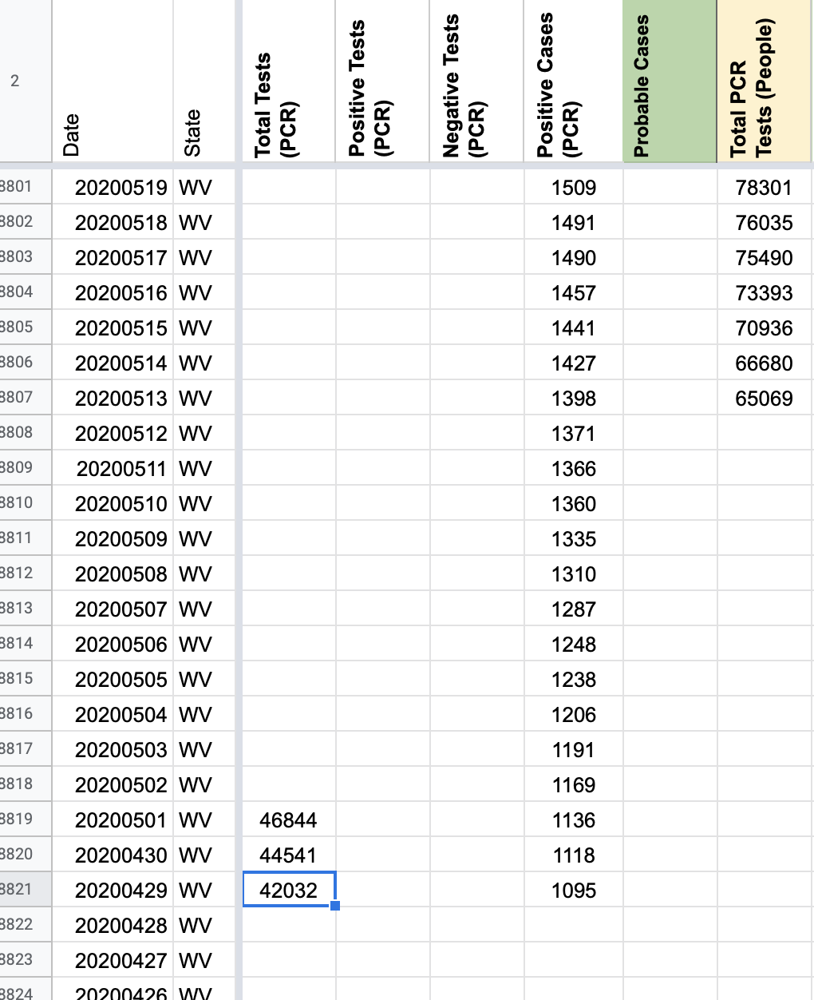
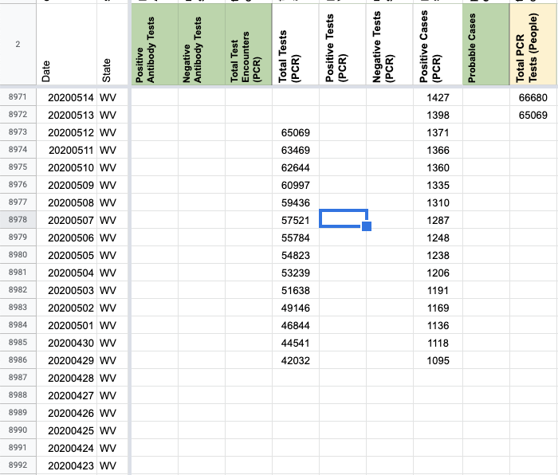
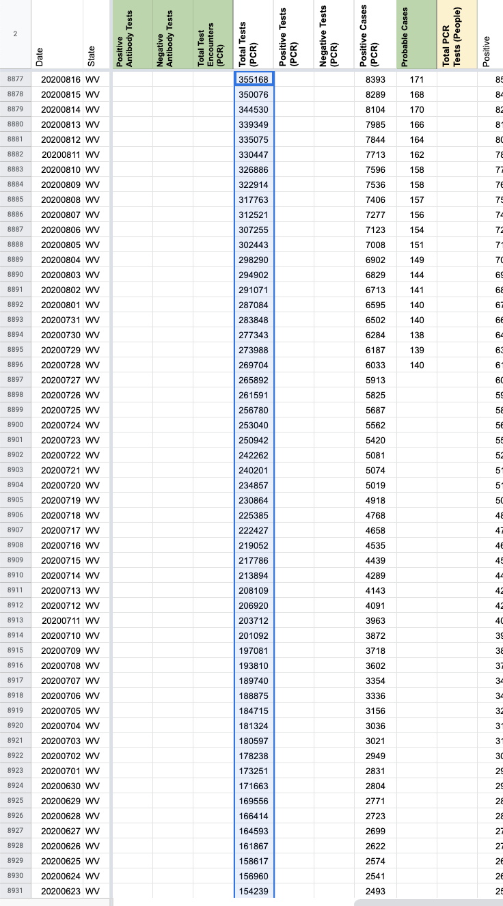

[WV] SVP Fixes: Move total test values from "Total PCR Tests (People)" to "Total Tests (PCR)" and fill in values for 5/2-5/12 from screenshots
Issue number 769
jaclyde opened this issue on August 16, 2020 at 4:02 pm
Labels Data quality Historical Data stale
State: West Virginia
Describe the problem: The state confirmed that WV has reported Total Tests in specimens on 7/7, so we are moving the Total Test data to the specimens metric from the people metric. Additionally, we missed recording the Total Test Numbers from 5/2-5/12, however we have screenshot of the WV dashboard from those days, and used them to fill in the missing data points.
Before:  After Adding Missing Data  After Move: 
Updates DC’d on slack: https://covid-tracking.slack.com/archives/C012C4BEAR4/p1597435481418200
Keeping Issue open to see about options for back fill prior to 4/29.
This issue has been automatically marked as stale because it has not had recent activity. It will be closed if no further activity occurs. Thank you for your contributions!
This issue has been closed because it was stale for 15 days, and there was no further activity on it for 10 days. You can feel free to re-open it if the issue is important, and label it as “not stale.”
Screenshots:
https://covid-tracking-project-data.s3.us-east-1.amazonaws.com/state_screenshots/WV/WV-20200512-124717.png https://covid-tracking-project-data.s3.us-east-1.amazonaws.com/state_screenshots/WV/WV-20200511-122437.png https://covid-tracking-project-data.s3.us-east-1.amazonaws.com/state_screenshots/WV/WV-20200510-122345.png https://covid-tracking-project-data.s3.us-east-1.amazonaws.com/state_screenshots/WV/WV-20200509-122516.png https://covid-tracking-project-data.s3.us-east-1.amazonaws.com/state_screenshots/WV/WV-20200508-122543.png https://covid-tracking-project-data.s3.us-east-1.amazonaws.com/state_screenshots/WV/WV-20200507-122532.png https://covid-tracking-project-data.s3.us-east-1.amazonaws.com/state_screenshots/WV/WV-20200506-122520.png https://covid-tracking-project-data.s3.us-east-1.amazonaws.com/state_screenshots/WV/WV-20200505-122442.png https://covid-tracking-project-data.s3.us-east-1.amazonaws.com/state_screenshots/WV/WV-20200504-122329.png https://covid-tracking-project-data.s3.us-east-1.amazonaws.com/state_screenshots/WV/WV-20200503-122355.png https://covid-tracking-project-data.s3.us-east-1.amazonaws.com/state_screenshots/WV/WV-20200502-122443.png